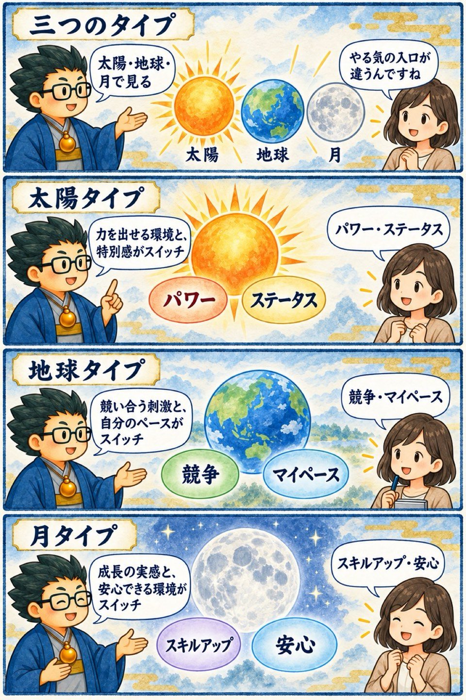

2025年 無料講座・第5回
干支の三分類と六分類
この回の要約
三分類は人を決めつけるラベルではなく、限られた時間で「どんな働きかけなら、やる気が入りやすいか」を考える入口です。
前半では、太陽・地球・月の三分類を、初対面、営業、褒め方、苦情対応へ応用します。講義で示されるやる気スイッチは、太陽が「パワー・ステータス」、地球が「競争・マイペース」、月が「スキルアップ・安心」です。中盤は、行動の速さ・支援・バランスという軸を重ねた六分類へ進みます。後半は、対立する二つを勝ち負けにせず、両方を生かす第三の道を探すという「統合」の話へ広がります。
動物ごとの性格や発達特性との関連、火と水・神道・図形・魂に関する説明は、講師の占術上・象徴上の見立てです。医学・心理学・歴史・宗教・科学の確認可能な事実とは分け、本人の経験を聞くための仮説として読んでください。
4コマ漫画でつかむ

タイムスタンプ
時間を押すと、上の動画がその場面から再生されます。
- 00:00導入・三分類を実践で使う理由
- 03:38人間関係と営業で、伝え方を変える
- 05:20世界の見え方と、とっさの判断
- 09:34太陽・月・地球の三分類
- 16:07苦情対応・褒め方・営業への応用
- 18:11三分類から六分類へ進む
- 21:59速さ・支援・バランスを重ねる
- 24:20発達特性を結ぶ講師の見立て
- 25:583タイプ・6つのやる気スイッチ
- 31:59短所を才能へ翻訳し、象徴の話へ
- 37:15和御魂と荒御魂という二面性
- 39:28弁証法とアウフヘーベンの比喩
- 44:37光と闇、二項対立の先を考える
- 46:14火と水、如意宝珠の象徴解釈
- 48:49東洋・西洋・インドの分類を比べる
- 52:22十干・十二支・動物をつなぐ復習
- 55:57三分類のまとめと次回予告
覚えておきたいこと
- 三分類は、短時間で伝え方や動機の入口を選ぶ地図として使う。
- 太陽のやる気スイッチは「パワー・ステータス」。
- 地球のやる気スイッチは「競争・マイペース」。
- 月のやる気スイッチは「スキルアップ・安心」。
- 太陽・地球・月の説明は講師の占術上の見立てで、人物の確定診断ではない。
- 分類の結果は、必ず本人の経験・反応・例外と照合する。
復習ポイント
講義内の占術上の説明・時代の読み・象徴的な解釈は、講師の見立てです。客観的な事実や将来を保証するものではありません。